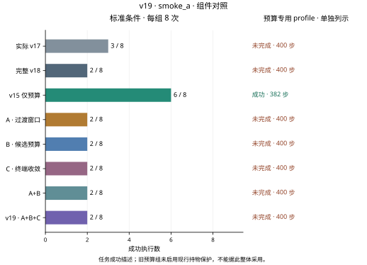
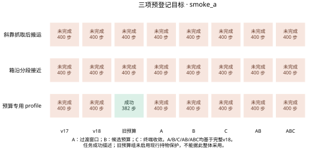

标准条件
预算专用 profile 0/1
最新完整阶段：smoke_a · 下列主数字仅统计标准条件，预算专用profile另列。
标准条件
标准条件
标准条件
标准条件
标准条件
标准条件
标准条件
标准条件
完整阶段累计 72 次评估执行。同一条件在不同版本和修订中重复，9个小测试条件包括8个标准条件与1个复用起点的配置profile，不能写成9个独立起点。
规划证书、保存输入回放、物理回放和完整任务成功是不同证据。旧权重冻结；本轮不做泛化训练，也不写论文。
执行前静态风险：执行前对同一保存输入调用搜索器：12000036旧step276状态由v18搜索器的198 work / 13调用降为126 work / 9调用；demo87的局部inset机会保留。但12000011旧第二次step311状态的搬运证书不完整，新规则不准入inset，由v18搜索器的39 work / 3调用变成125 work / 9调用。这些不是各版本本轮回合的实际规划时间，也不是普遍省时保证；已准入可选候选仍可花满48 work后无结果，实际作用须以本轮完整闭环执行判断。 查看离线记录。
已知诊断案例，不能作为独立泛化结论。预算profile复用旧6000005；八组按登记条件配对，A/B/C/AB分别改变完整v18上的对应开关，完整v19为ABC。旧预算组未启用现行持物保护，只能参考。
| 目标 | 实际 v17 | 完整 v18 | v15 仅预算 | A · 过渡窗口 | B · 候选预算 | C · 终端收敛 | A+B | v19 · A+B+C |
|---|---|---|---|---|---|---|---|---|
| 斜靠抓取后搬运demo_13000021 | 未完成，400步 | 未完成，400步 | 未完成，400步 | 未完成，400步 | 未完成，400步 | 未完成，400步 | 未完成，400步 | 未完成，400步 |
| 箱沿分段接近demo_13000022 | 未完成，400步 | 未完成，400步 | 未完成，400步 | 未完成，400步 | 未完成，400步 | 未完成，400步 | 未完成，400步 | 未完成，400步 |
| 预算专用 profiledemo_6000005 | 未完成，400步 | 未完成，400步 | 成功，382步 | 未完成，400步 | 未完成，400步 | 未完成，400步 | 未完成，400步 | 未完成，400步 |
72回合完整配对：实际v17为3/9，v18为2/9，旧预算候选7/9；A/B/C/AB和完整v19均2/9。完整v19相对v18无新增成功，相对v17仍丢失12000036，三个预定目标0/3。每组9个profile只有8个不同起点，不是整个项目总体成功率。预算组保护不同，不能整体采用。
下一步：保留本轮负结果和原正式成果；停止752回合扩展、每版240回合开发、冻结及新起点确认，不把静态检查或局部提速写成任务成功。
同输入的B搜索从198work/13调用降为126work/9调用，仍选择相同out15目标。A将下降19步减到13步。AB/完整v19因此在363进入PLACE、391进入RELEASE；实际v17分别为362和390，最终第400步成功，而完整v19第400步仍失败。C没有缩短这里的三段CARRY执行5/17/55步。
下一步：先逐帧比较那1步上游差及释放后的实际物理轨迹，检验有依据的衔接触发条件；不加第401步、不缩短确认、不事后改成功定义。
smoke_a_route_diagnosis.json · smoke_a_control_diagnosis.json
6000005中，A在窗口后恢复比例进展，310时钟再次触发回正，随后有1步IK检查和9步PATH_RECENTER；下降由v18的25步变为29步，进入CARRY从358延后至362。缩小作用范围有副作用，不能只用12000036的提速证明它合适。
下一步：下一轮先考虑按抓取轴进展与横向偏移分别控制，以当前可观测误差界定作用范围；仍保留原动作变化限制、几何认证、姿态和回正保护。先做同状态诊断，再决定是否改控制器。
C单项84次、完整v19共85次积分制动提案全部实际提交。6000005中C单项把389–391的连续3帧延长到389–392的4帧，但393位置误差10.748mm又越过9mm阈值。完整v19相对AB最多仍只有3帧连续满足，末步误差6.084mm只是本段第2帧；单帧误差小不能替代连续5帧到达。
下一步：优先诊断观测速度、D2在途动作与停车后的保持过程，设计提前制动与稳定保持的单项候选，再做消融；不削弱9mm/0.08rad和连续5帧要求。
B/AB/完整v19每组各1次inset准入并获选，耗43work；各7次按准入条件仅耗1work后标记未知，48work上限未在真实轨迹触顶。demo87保留短路成功，C使已成功回合283→282步。12000011第二次却改选out15，AB/完整v19直到396才进入PLACE；13000021仍无通过所有原检查的完整路线。13000022进入DESCEND的事件时钟仍为387，未进入搬运搜索，后端改动无法解决它的上游接近超时。
下一步：保留候选限额作为未采用的局部候选；分别处理真实的可选路线准入漏失、接近阶段耗时和末端保持。暂不再叠更多模块，也不开展泛化训练。
smoke_a_route_diagnosis.json · smoke_a_control_diagnosis.json · candidate_static_a.json
预定 752 次；完整记录 0 次。
预定 720 次；完整记录 0 次。
预定 1440 次；完整记录 0 次。
小测试72次；消融752次；开发共720次，分别为v17、v18和v19各240次；独立确认1440次，须先冻结，再使用全新起点。未运行的数据不会填成结果。
| 阶段 | 成功数 / 执行数 | 门槛状态 | 原始依据 |
|---|---|---|---|
| smoke_a | 实际 v17 3/9 · 完整 v18 2/9 · v15 仅预算 7/9 · A · 过渡窗口 2/9 · B · 候选预算 2/9 · C · 终端收敛 2/9 · A+B 2/9 · v19 · A+B+C 2/9 | 结果门槛未通过 | 统计 · 条件 · 动作核验 · 物理回放 |
已通过的动作核验共 27,140 控制步；物理回放 72 回合、27,140 步。回放不增加成功率样本。
不把任意条件顺序连成趋势线，不对已知小测试附加泛化区间。每图提供600 dpi位图、矢量文件和绘图数据，来源哈希在图表目录中。


本页没有新增v19演示视频。查看v14原始对比演示 ↗，其中动作与结果仍属于历史v14实验，不能视为本轮成果。